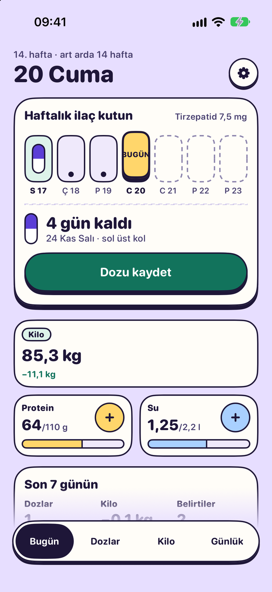

Hiçbir dozu kaçırma
Yedi bölmede haftan ve seçtiğin saatte bir hatırlatma.
 Levia
Levia
Levia tedavinin ilaç kutusudur: doz gününü hatırlatır, sıradaki enjeksiyon bölgesini söyler ve ne kadar yol aldığını gösterir.

Levia bağımsızdır ve hiçbir ilaç firmasıyla bağlantılı değildir.
Daha az dağınık not, doz gününde daha az tereddüt.
Yedi bölmede haftan ve seçtiğin saatte bir hatırlatma.
Levia her bölgeyi hatırlar ve en uzun süredir dinlenen bölgeyi önerir.
Kilon, hızın ve hedefine giden kilometre taşları tek bir net grafikte.
Seviye, kaydettiğin dozlardan ve ilacın yayımlanmış yarı ömründen yapılan matematiksel bir tahmindir. Kan ölçümü değildir.
Aylık abonelik ya da tek seferlik satın alma da mümkün.
Abonelik otomatik olarak yenilenir; iOS Ayarlar'dan istediğin zaman iptal edebilirsin. Ödemeden önce App Store ülkendeki fiyatı gösterir.
Hesap yok, sunucu yok, reklam yok. Levia'ya kaydettiklerin yalnızca telefonunda saklanır.